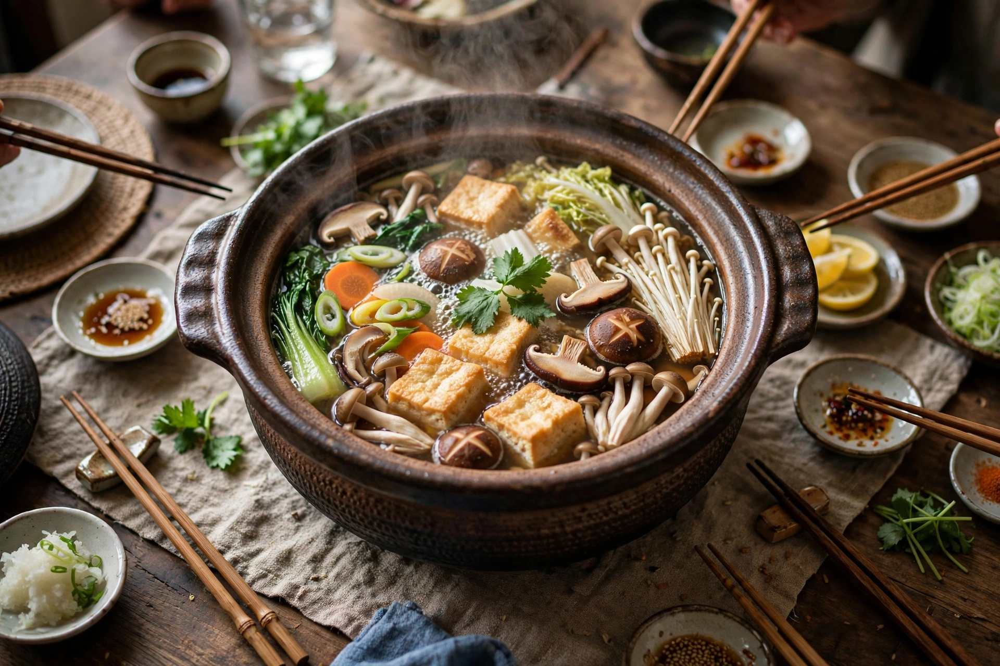

Nabemono (鍋物, なべ物, なべもの), or simply nabe, is a variety of Japanese hot pot dishes, also known as one-pot dishes and "things in a pot." Ingredients — meat, seafood, tofu and vegetables — are cooked together in a pot of seasoned broth at the table, traditionally over a portable stove, and eaten communally, especially in winter.

Well-known varieties include shabu-shabu, in which paper-thin slices of meat are swished briefly in hot broth and dipped in ponzu or sesame sauce; sukiyaki, beef and vegetables simmered in a sweet soy-mirin sauce and dipped in raw egg; yosenabe, a mixed "anything-goes" seafood and vegetable pot; oden, a long-simmered dashi pot of fish cakes, daikon, eggs and konjac sold at convenience stores and yatai stalls; motsunabe, a Fukuoka specialty of beef or pork offal with garlic chives; chankonabe, the protein-rich stew eaten by sumo wrestlers; and yudofu, Kyoto-style simmered tofu. Regional broths range from clear kombu dashi to miso, soy sauce, kimchi-style (kimchi-nabe) and soy milk.
The pot — often an earthenware donabe or cast-iron tetsunabe — sits at the centre of the table; diners take cooked items into small bowls and season them to taste. At the end of the meal, rice, noodles or beaten egg are commonly added to the remaining flavourful broth to make zōsui (rice porridge), so nothing is wasted.
Shabu-shabu · Sukiyaki · Oden · Hot pot · Japanese cuisine